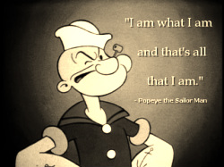

There are different versions of I Am Poems out there, we are going to be exploring two of them. Today we are going to look at version #1. Version #1 is essentially a poem where the poet tells the reader about him or herself. While some poems have more room for variance in their creation, this poem needs its directions followed, otherwise it might become a different version.
Directions: Please follow these line-by-line instructions.
Line
#1. I am
#2. Three nouns about which you have strong feelings. Begin each with a capital letter.
#3. A complete sentence about two things that you like.
#4. Three nouns that describe what you like to see in other people; end with "are important to me."
Capitalize each noun.
#5. A sentence containing a positive thought or feeling. It can tell what you find acceptable in yourself.
#6.-#7. Sentence in which you show something negative in yourself or others, however the sentence must end by showing that out of something BAD can come GOOD. Use the word "but" to link the bad and good.
#8.-#9.-#10. Each line is a short sentence relating something about which you have strong feelings--likes or dislikes. They do not have to relate to each other or to the previous lines you have written.
#11. End with "This is me" or "I am."
Student Example:
I am
Life, Hope, Living
I care very much about the world and life on it.
Honesty is important to me.
Optimism is important to me.
Unselfishness is important to me.
Hospitality is a good thing.
Meanness is bad, but can be good to get people
off your back.
The world is getting weaker.
The longer the days the more beautiful they are.
People are too negative.
I am.
---Freddie Prinze Jr. (Grade 7)